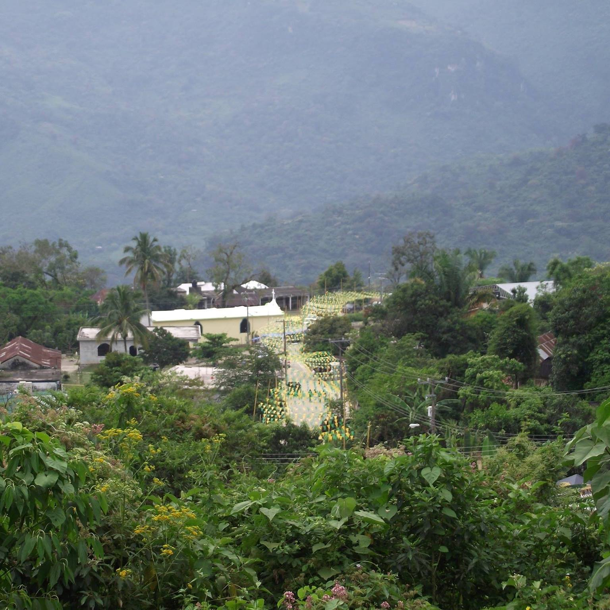
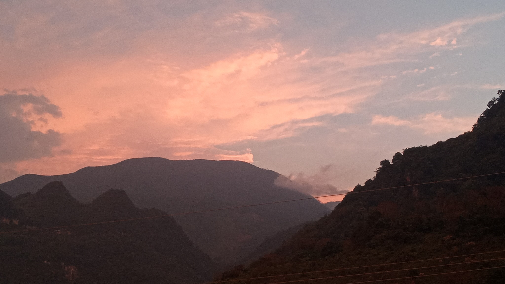
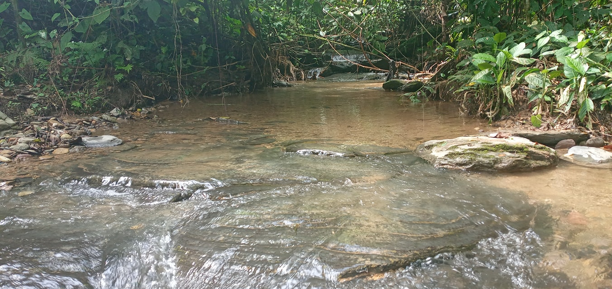
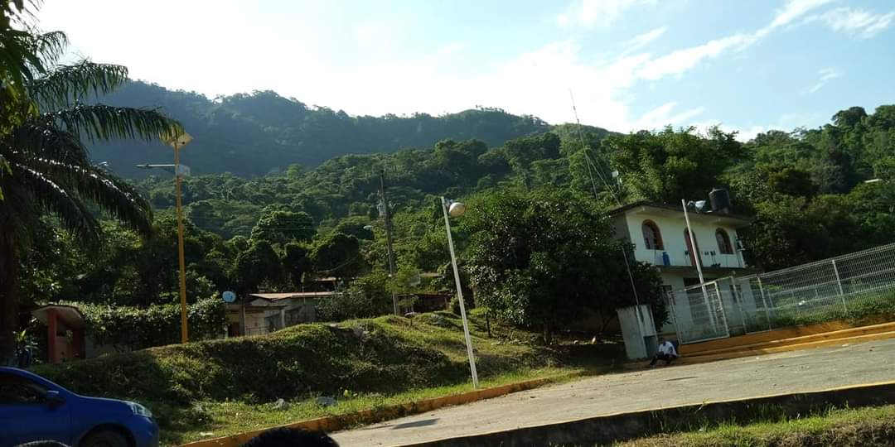
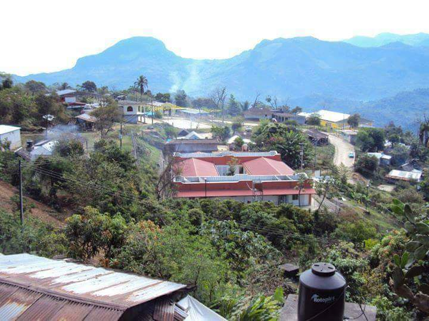
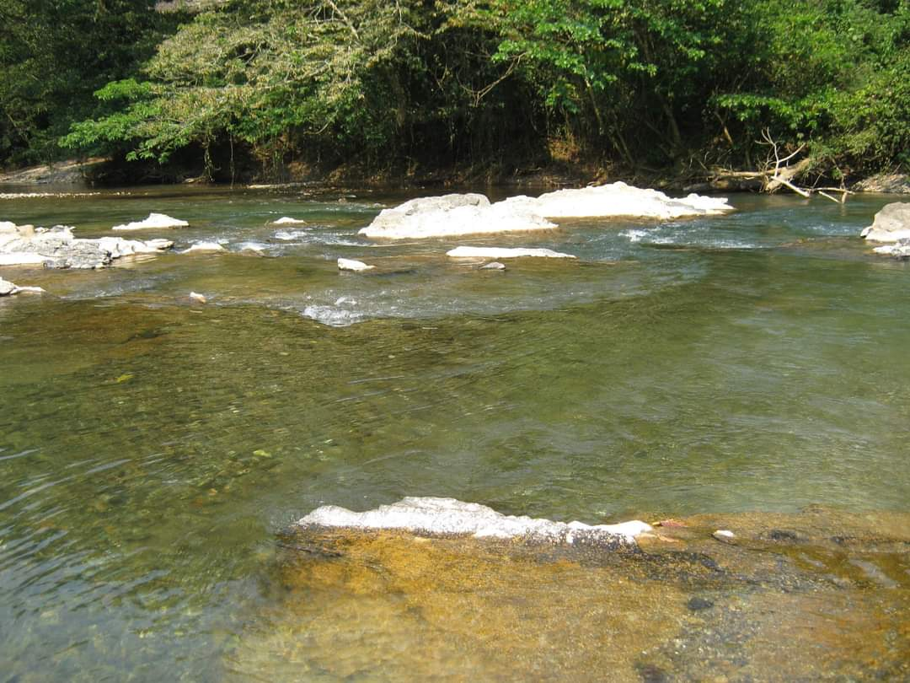
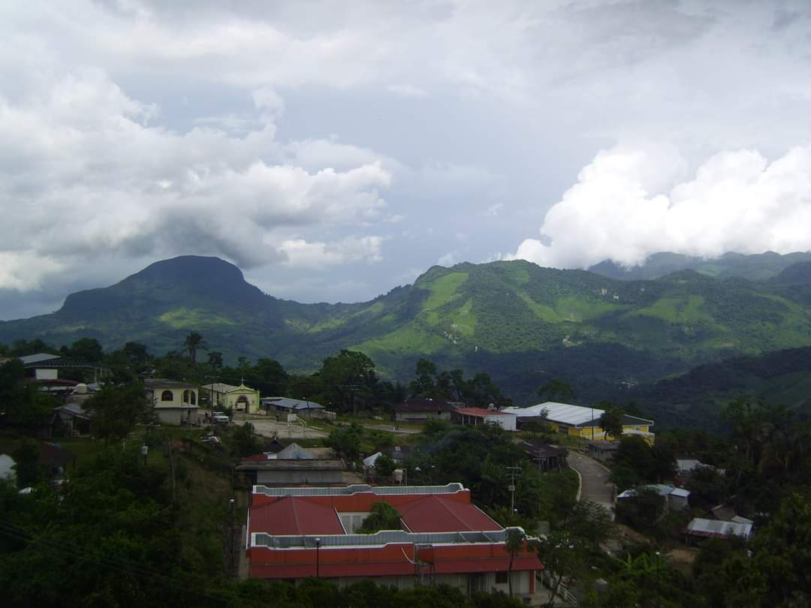
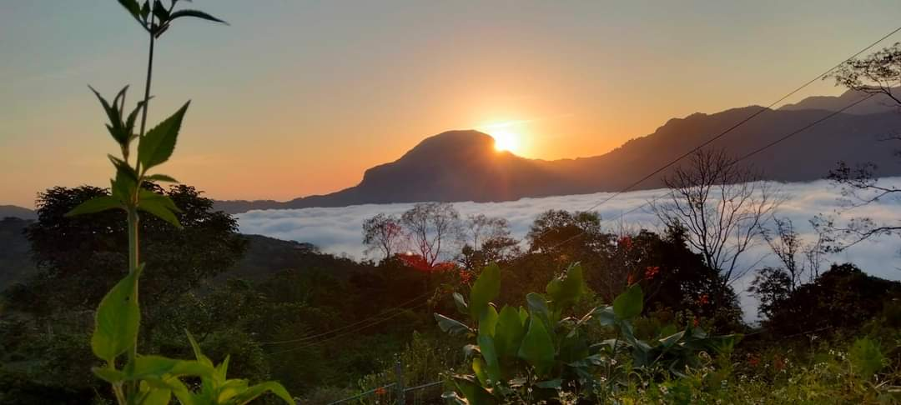
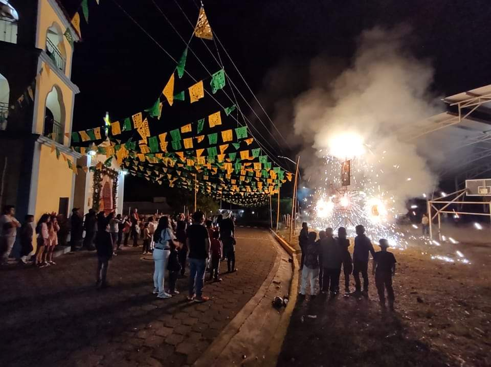

Conoce su Historia

1Historia
La inspectoria de Coyolapa tiene una rica historia que se remonta a tiempos ancestrales. El nombre de esta localidad, "Coyolapa", se compone de dos elementos principales:
"Coyol": Se refiere al "coyol", una especie de palma que es común en la región. Esta palma es conocida por su fruto, el "coyol", que contiene agua en su interior y es apreciado por su sabor refrescante.
"Apa": En el idioma náhuatl, "apa" significa "agua". Por lo tanto, "Coyolapa" se puede interpretar como "agua de los coyoles" o "lugar donde hay agua de coyoles".
Galeria







Atractivos Turisticos:

Contempla la belleza natural que rodea a Coyolapa, un paisaje cautivador que te transportará a un mundo de serenidad y armonía.
